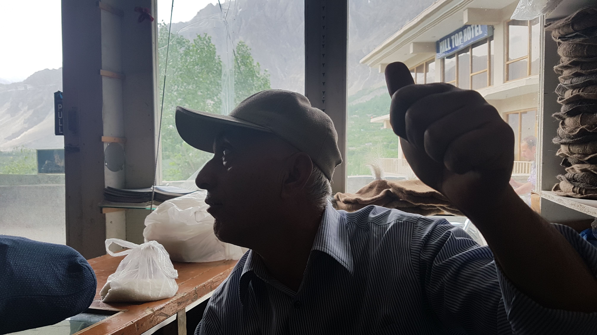

훈자(Hunza)의 첫인상
2017년 05월 23일
파키스탄
버스 정류장에서의 노숙. 실내에서 시큐리티 가드와 함께 묶었기 때문에 무척 안전했다. 바닥이 딱딱했지만 생각보다 잘 잤다. 이렇게 점점 아무데서나 잘 수 있는 여행자의 몸으로 바뀌는 것인가? 우리는 새벽 5시가 조금 넘어서 일어났다. 힘들어서 더 오래 잘 수 는 없었다. 우리 목적지인 훈자(Hunza)로 갈수 있는 알리아바드(Alimabad) 행 합승 지프를 알아봤다. 역시 사람들에게 물어보니 쉽게 구할 수 있었다. 몇군데 지프를 돌아다녀본 결과 200에 알리아바드까지 가는 합승지프 티켓을 구했다. 파키스탄은 가격을 흥정하는 사람들도 너무 착하다.
우리는 가벼운 마음으로 아침식사를 하러 돌아다녔다. 파키스탄 이나 인도나 네팔모두 현지인들은 거의 한 종류의 음식만 먹는것 같았다. 이곳에는 짜파티와 달이다. 거의 대부분 현지인들이 이렇게 식사를 했다. 우리는 한 레스토랑에 들어가서 감자튀김과 프라타를 먹었다. 감자튀김이 무척 맛있었다.
어제밤 밤새도록 우리를 지켜주었던 아저씨. 정말 순수한 분이었다.
그동안 여행에 대해 막연히 걱정을 했던 것들이 있다. 숙박은 어떻게 할것이며, 음식은 어디서 먹을 것이며, 이동은 어떻게 할것인가? 하지면 여행을 계속하면서 생각보다 쉽다는것을 알게 되었다. 아무리 현지인만 사는 동네라고 하더라도 없던 자동차를 만드는것도 아니고 없는 음식을 만들어먹는것도 아니다. 다 사람 사는 곳이다. 음식점도 있고 교통수단 및 숙박 시설도 모두 갖추고 있다. 현지인들도 밥도 먹고 다른 지역으로 이동도 하고 잠도 잘것 아닌가? 여행이라는것 생각보다 그렇게 어렵지 않다. 그동안 가지고 있었던 많은 고정관념들이 깨진다.
이곳에서는 같은 장소에 오랫동안 있으면 서로 말을 걸게 되고 대화를 하게 된다. 버스 정류장에서도 어떤 아저씨와 대화를 했는데 길깃에서 호스텔을 운영하고 있다고한다. 명함을 줄테니 나중에 게스트로 오라고 한다. 사람들의 호의에 빵빵 얻어맞음.
우리가 도착했던 길깃의 풍경도 무척 특이했다. 나무가 하나도 없는 바위산에 둘러쌓여있었고 그 끄트머리에는 설산이 보였다. 그리고 바위산과 지면의 경계부터 푸른 숲이 펼쳐져 있는 모습이었다. 머리속에 막연히 자리잡고 있었던 중앙아시아의 이미지였다.
다시 봉고차 위에 짐을 올리고 출발했다. 현지인과 친해지는 법은 무척 쉽다. 그냥 웃는 얼굴로 인사만 하면된다. 그러면 그들은 경계를 풀고 어디서왔냐고 묻기 시작한다. 그러면서 대화가 이어지고 결국 친구로 이어지고 그것은 결국 그들의 친절과 호의로 이루어질때가 많다. 버스안에서도 몇몇사람들과 대화하고 친해졌다.


같은 봉고차에 탔었던 아저씨. 제임스 스톤으로 중국과 비즈니스를 한다고 한다. 비즈니스맨이라 그런지 복장이 무척 깔끔했다.
우리는 이슬라바마드부터 훈자까지 카라코람 하이웨이(KKH) 도로를 이용해 이동했다. 약 3번의 체크 포스트에서 우리는 차에서 내려 외국인 등록을 했는데 점점 훈자에 다가갈 수록 믿기 어려울 정도로 예쁜 광경들이 펼쳐졌다. 바위 산으로 둘러쌓인 계곡에 조그맣게 있던 마을들 그리고 그 아래에는 넓게 펼쳐진 잔디밭도 있었는데 돋자리를 깔고 누워있으면 좋을 법한 장소였다. 그곳에 갈 수 있을까?. 한번 가보고 싶다. 가고 싶은 장소에 가보는게 여행인데, 이렇게 투어처럼 정해진 장소만 찍는 여행을 하니 제약이 많은것은 사실이다.

사진에 보이는 경계가 수천년전에 만들어진 실크로드이다. 옛날 사람들은 저 길을 말을타고 이동했다. 동양과 서양 문화 교류의 장이었던 실크로드를 눈으로 직접보니 흥미로웠다.
2시간가량 길깃에서 훈자까지 이동했는데 전혀 힘들지 않았고 즐거웠다. 경치가 너무 멋졌기 때문인것 같다. 결국 훈자에 도착해서 ATM에 들른뒤 바로 택시를 탔다. 새로운 흥정 스킬을 개발 했다. 훈자까지 200루피라고 했을때 훈자까지 한사람당 50루피로 해주면 어떻겠냐고 제안했다. 우리는 총 3명이고 택시 기사 당신까지 각각 50루피씩, 총 4명이서 200루피로 가는것이 어떻겠냐고 했더니 아저씨가 엄청 어처구니가 없어하며 빵터졌다. 내가 봐도 어이없는 흥정 스킬이었다.(ㅋ) 결국 3명이서 250루피로 훈자로 출발했다.
훈자의 첫인상
택시를 타고 훈자로 올라오는 길. 백인이 보였다. 갑자기 불편한 감정이 생겼다. 3일동안 현지인들 틈속에서 주인공이 된 느낌을 받았기 때문일까? 그동안 한명의 외국인도 파키스탄에서 만나지 못했기 때문일까? 아니면 다들 어렵다고 했던 파키스탄에 우리만 도정정신을 가지고 도착했기를 바랬던것일까?
그동안 파키스탄을 여행하다가 갑자기 휴양지에 온 느낌이었다. 택시에서 내려서 올라가는데 누군가 안녕하세요 라고 한다. 현지인 이었다. 이곳에서 그들에겐 우리가 익숙한 외국인이었던 것이다. 깔끔한 슈퍼마켓들 그리고 외국인이 곳곳에 앉아있는 레스토랑과 까페들이 보였다. 나는 불편했다. 말로만 듣던 훈자라는 마을이 그냥 관광지가 되어버린 느낌이었다. 이곳은 이미 관광지이다. 이미 오래전에 여행자들과 자본에 오염되었다는 생각이 들었다. 우리가 각종 매체나 사람들을 통해서 듣던 좋다는 훈자는 이미 오래전에 좋았던 자본에 때묻지 않았던 그 시절의 마을이었을 것이다.
우리는 택시로 숙소에 도착했다. 12시 즘 도착했다. 미리 조사했던 한곳이었는데 한 사람당 500루피(약5000원)인것에 비해 방상태가 썩 좋지 않았다. 우리는 다른 숙소로 이동했다. 택시아저씨는 흔쾌이 그쪽까지 이동시켜주셨다. 파키스탄 사람들 너무 착하다ㅜ 두번째 숙소는 한국에서 유명한 복마니 라는 사람이 운영하는 게스트하우스였다. 한방을 1000 루피에 3명이 공유할 수 있었다. 훨씬 저렴하고 뜨거운물 샤워도 가능하다고 하길래 이곳으로 묶기로 했다.
우리는 그동안 현지인과 어울렸던 진짜 로컬 파키스탄을 경험하다가 갑자기 여행지에 도착하여 적응을 할 수 없었다. 여행지의 느낌이 너무 강했다. 숙소에 전기가 안나왔다. 훈자 마을에는 전기가 거의 들어오지 않는것 같다. 발전소에서 전기가 들어올 때도 있지만 지금 시기에 문제가 있는것인지 아니면 원래 그런것인지 모르겠다. 전기가 안들어오니 아무것도 할 수 없었다. J가 전기 포트가 있어서 직접 짜이를 끓여먹을 기대를 하고 왔는데 할수가 없었다.
우리는 3일동안 씼지를 못했다. 말그대로 땀과 먼지에 쩔어있었다. 드디어 샤워를 할 수 있었다. 근데 수돗물이 시커먼 색이었다. 다행이 더러운물은 아니고 빙하물이라고 하니 씻을 수 있었다. 검은물 샤워는 처을 해본다. 분명히 뜨거운물 샤워를 할 수 있다고 했는데 온수가 나오지 않았다. 히말라야 물이라서 그런지 무척 차가웟다. 그래도 샤워를 할 수 있어서 다행이었다.
우리는 그동안 지치고 빨랫감도 많이 생겨서 직접 빨래를 하지않고 세탁소에 맞기기로했다. 점심을 먹고 세탁소를 찾아 가기로 했다. 우리의 훈자에서 첫 식당은 숙소 앞에있던 레인보우 식당이었다. 치킨 비리아니와 고기찜 같은것과 짜파티를 먹었는데 나는 나름 맛있게 먹었지만 S와 J는 별로 라고 했다. 확실히 마날리나 맥그로드 간지 만큼 맛있지는 않았다. 우리는 훈자에 의문을 품기 시작했다. 전기도 안나오고 WIFI도 안되고 음식도 별로 맛있지않고 심지어 비싸다. 전기가 안나와서 ATM 기계도 동작하지 않는다. 숙박비도 상대적으로 그리 싸지 않은데 여행자들의 3대 블랙홀이라는게 말이되나?
빨래 방을 찾으러 가다가 어떤 아저씨가 반갑게 인사했다. (물론 지나가다가 쳐다보는 모든 사람들과 반갑게 인사했다. 내 경험상 파키스탄 만큼 친절한 나라는 없었다.) 아저씨가 차 좋아하냐고 한다. 본인이 차를 정말 잘 만든다고 한잔 하고 가라고 한다. 인도와 네팔에서 많은 경험을 했던것이 있다. 현지인들의 호의가 있었다면 항상 나중에 댓가(돈)를 요구했다. 이번에도 그 호의가 의심스러웠지만 여긴 파키스탄이다. 내가 3일동안 경험했던 파키스탄은 전혀 그런 사람들이 있는곳이 아니었다. 역시 진짜 아저씨는 우리와 맛있는 차를 끓여주고 반갑게 헤어 졌다. 나중에 밥도 해줄테니 오라고 한다. 본인이 요리를 엄청나게 잘한다고 하신다.

정말 친절하고 즐거워보이는 아미르 아저씨
결국 우리는 빨래방을 찾을 수 없었다. 결국 숙소에서 빨래를 했다. 큰 바가지 3개를 빌려달라고 했는데 흔쾌히 빌려줬다. 착한사람들.. 바가지에 세제를 넉넉히 뿌려놓고 찌든 빨래를 넣어놨다. 한참을 방에서 일기도 쓰고 있다가 저녁을 먹으로 나갔다. 아까 봐두었던 blue moon 레스토랑이었다.
수제 칼국수를 시켰는데 맛있었다.
훈자에서 마시는 로컬 물. 수돗물 처럼 검은색 물이다. 흐억.
레스토랑에 올라왔는데 경치가 너무 멋있었다. 훈자 밸리 전경이 한눈에 들어오는 뷰였다. 여기는 숙소도 같이 있었는데 경치가 너무 멋있을것 같았다. 방을 구경했는데 2천 루피라고 한다. 처음엔 비싸서 거들떠도 안봤는데 그냥 한번 할인 해줄 수없냐고 물어봤다. 한사람당 500씩 해줄수 없는지 우리에게 서빙을 해주었던 17살짜리 친구에게 요청을 했더니 흔쾌히 알았다고 한다. 읭? 그 친구가 말하길 우리가 좋은 사람이라서 해준다고 한다. 와우!. 안그래도 음식도 너무 맛있고 숙소에 있던 사람들과 기분좋게 이야기 했기에 이곳이 좋아지던 참이었다.
우리는 한사람당 500이라는 비용이 비싸게 느껴지긴 했지만 이렇게 좋은 숙소라면 충분히 감당할 수있겠다는 생각을 했다. 그리고 500루피가 그리 비싼 가격도 아니다. 하루 숙박비가 5000원 정도 되는것이니 말이다. 우리는 결국 조금 바쌌지만 내일 이곳으로 옮기기로 했다. 다시 그 친구에게 물어봤더니 난처한 표정을 지으며 리셉션에 가서 상의해보라고 한다. 너무 쉽다 했더니 역시... 말이라도 해보자는 생각으로 리셉션에 갔다. "We can discus about room price.. Can you give us room price 500rs each one persen?" 이런식으로 말을 시작했는데 그냥 바로 Of course라는 답변을 받았다. 읭? 진짜 우리는 내일부터 1500에 이방에 묶을 수 있게 되었다. 기분 최고!